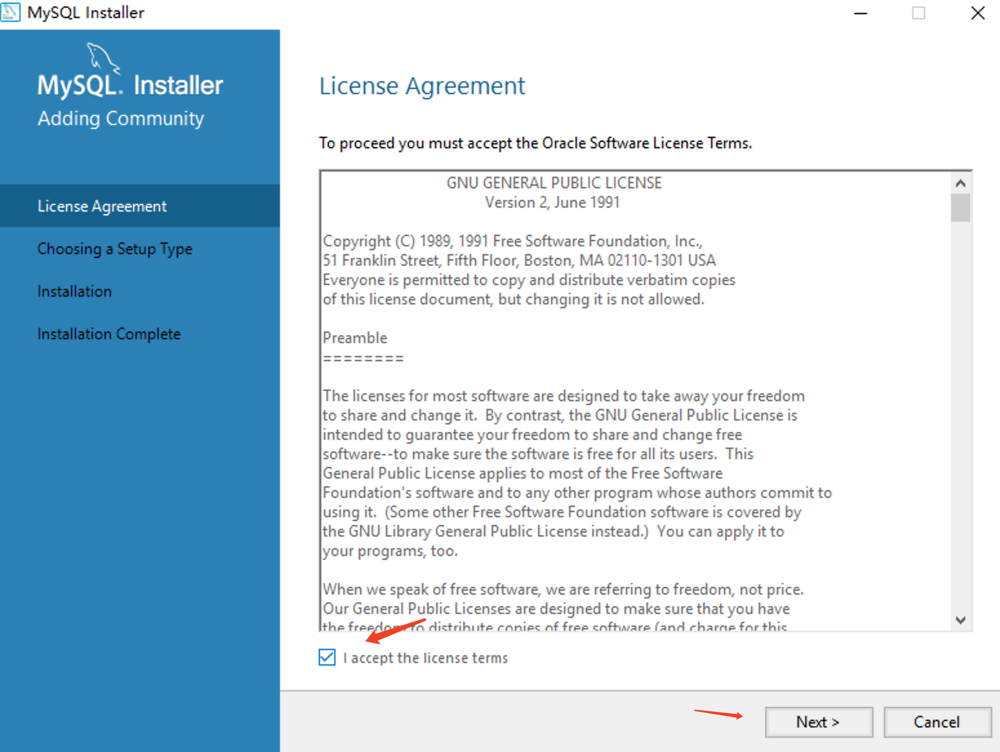
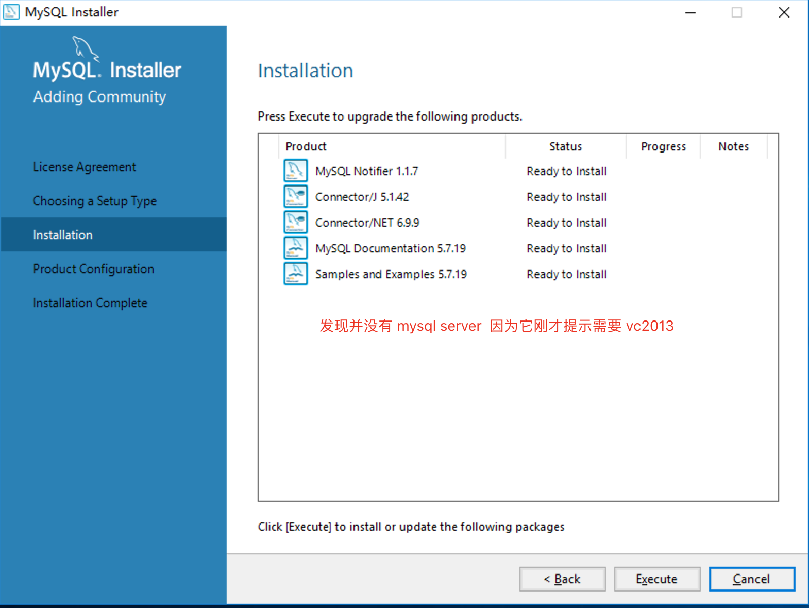
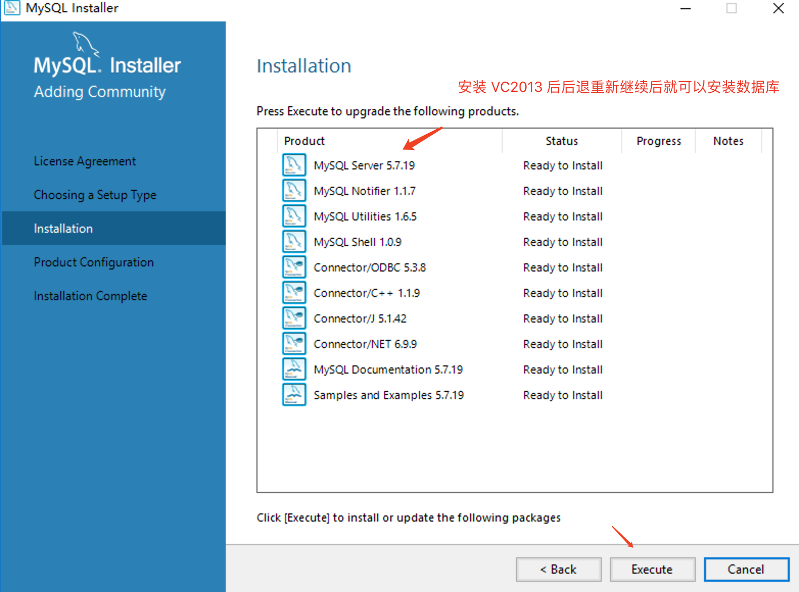

引言
现有的存储数据方式有哪些？
变量：int i = 1;
对象：new student("zhangsan", 20);
数组：new Object[]
List：ArrayList、LinkedList、HashSet
Map：HashMap
IO流：文件(持久化)
以上的存储有哪些缺点？
1、瞬时数据，程序关闭就销毁了
2、没有数据类型的区分
3、存储的数据量小
4、不够安全
5、没有备份恢复机制
数据库
为什么要有数据库
所有的移动端和网页端都需要数据的存储
什么是数据库
简单理解，数据库就是用来存数据的。
数据库的分类【重点】
MySQL
简介
MySQL是一个关系型数据库管理系统，由瑞典MySQL AB 公司开发，属于 Oracle 旗下产品。MySQL 是最流行的关系型数据库管理系统之一，在 WEB 应用方面，MySQL是最好的 RDBMS(Relational Database Management System，关系数据库管理系统) 应用软件之一。
优点
1、体积小
2、速度快
3、开源免费
访问与下载
下载地址(zip)：https://dev.mysql.com/downloads/mysql/
下载地址(msi)：https://dev.mysql.com/downloads/windows/installer/5.7.html
| 版本选择 |
|---|
 |
| 下载页面 |
|---|
 |
安装
运行mysql-installer-community-5.7.28.0.msi，进入安装步骤
| 同意协议，点击下一步 |
|---|
|  |
| 选择安装类型，点击下一步 |
|---|
 |
| 注意：安装需要依赖环境，如需安装的功能缺少对应环境，需先安装环境 |
|---|
| 下一步的时候会提示缺少环境,此处的提示是说你期望安装的产品中缺少依赖,不一定提示的是数据库服务器安装的依赖,可能是其他功能组件的依赖缺少 |
|---|
 |
| 此处发现没有 mysql server, 说明它对应的依赖缺少,可以先执行安装这些可以安装的,之后安装完依赖后再重新安装其他模块,我们此处的操作是先安装依赖,然后后退再次安装 |
|---|
|  |
| 下载安装前面提示的 mysql server 需要的 vc2013后,vc2013 如果在64位系统上面建议32和64的程序都安装,然后在上图的地方后退,重新 next 就可以看到可以安装 mysql server 了 |
|---|
|  |
| 检查是否存在失败项 |
|---|
 |
| 进行第一步配置,除了需要设置密码外,后面的步骤基本上都是下一步 |
|---|
 |
| 类型与网络配置 |
|---|
 |
| 设置 root 密码 |
|---|
 |
| 创建SQL服务与窗口 |
|---|
 |
| 插件 |
|---|
 |
| 应用配置 |
|---|
 |
| finish 后回到当前页面继续配置 |
|---|
 |
| 连接服务器（先 check检查, 后下一步） |
|---|
| 执行完此步骤 下一步 finish 配置完成 |
|---|
 |
卸载
- 控制面板卸载。
- 找到mysql的安装目录进行删除。
- programdata 删除mysql
- programdata 为隐藏文件夹，需要开启查看隐藏文件夹选项
- 注意：如果卸载后，如有未删除的MySQL服务，可采用手动删除。
- 以管理员身份打开命令行，输入 sc delete MySQL57 回车。
配置环境变量
- 创建MYSQL_HOME：C:\Program Files\MySQL\MySQL Server 5.7
- 追加PATH：%MYSQL_HOME%\bin;
MySQL目录结构
核心文件介绍
| 文件夹名称 | 内容 |
|---|---|
| bin | 可执行文件 |
| lib | 库文件 |
| include | 头文件 |
| Share | 字符集、语言等信息 |
SQL
概念
SQL（Structured Query Language）结构化查询语言，用于存取数据、更新、查询和管理关系数据库系统的程序设计语言。
经验：通常执行对数据库的“增删改查”，简称C（Create）R（Read）U（Update）D（Delete）。
SQL语句的分类【重点】
DDL：数据定义语言 data definition language DML：数据操作语言 data manipulation language DTL：数据事务语言 data transaction language DQL：数据查询语言 data query language DCL：数据控制语言 data control language
通过命令操作数据库【重点】
连接数据库
标准格式
xC:\Users\FC>mysql -h localhost -u root -P 3306 -pEnter password: ****Welcome to the MySQL monitor. Commands end with ; or \g.Your MySQL connection id is 10Server version: 5.7.31-log MySQL Community Server (GPL)Copyright (c) 2000, 2020, Oracle and/or its affiliates. All rights reserved.Oracle is a registered trademark of Oracle Corporation and/or itsaffiliates. Other names may be trademarks of their respectiveowners.Type 'help;' or '\h' for help. Type '\c' to clear the current input statement.mysql>简化步骤
xxxxxxxxxxC:\Users\FC>mysql -uroot -pEnter password: ****Welcome to the MySQL monitor. Commands end with ; or \g.Your MySQL connection id is 9Server version: 5.7.31-log MySQL Community Server (GPL)Copyright (c) 2000, 2020, Oracle and/or its affiliates. All rights reserved.Oracle is a registered trademark of Oracle Corporation and/or itsaffiliates. Other names may be trademarks of their respectiveowners.Type 'help;' or '\h' for help. Type '\c' to clear the current input statement.mysql>查看数据库
xxxxxxxxxxshow databases;注意分号不要忘
内置数据库
不要动！！！
| 数据库名称 | 描述 |
|---|---|
| information_schema | 信息数据库，其中保存着关于所有数据库的信息（元数据）。 元数据是关于数据的数据，如数据库名或表名，列的数据类型，或访问权限等。 |
| mysql | 核心数据库，主要负责存储数据库的用户、权限设置、关键字等， 以及需要使用的控制和管理信息，不可以删除。 |
| performance_schema | 性能优化的数据库，MySQL 5.5版本中新增的一个性能优化的引擎。 |
| sys | 系统数据库，MySQL5.7版本中新增的可以快速的了解元数据信息的系统库 便于发现数据库的多样信息，解决性能瓶颈问题。 |
创建数据库
xxxxxxxxxx# 创建数据库create database 数据库名;# 指定字符集创建数据库create database 数据库名 character set = 编码集;# 例如：create database student character set = gbk;# 指定字符集创建数据库create database 数据库名 charset 编码集;# 例如：create database student charset utf8;删除数据库
xxxxxxxxxx# 删除数据库create database 数据库名;# 例：create database student;使用/选择数据库
xxxxxxxxxx# 切换到指定数据库use 数据库名;# 例：use student;选择数据库（因为服务器下面有可能有很多数据库， 我要选择哪一个数据库下面进行表的操作）
查看数据库的创建
xxxxxxxxxx# 查看数据库的创建过程show create database 数据库名;# 例：show create database student;查看数据库的结构
xxxxxxxxxx# 查看数据库的结构desc 表名# 例：desc student;数据类型【重点】
数值类型
MySQL支持所有标准SQL数值数据类型。
这些类型包括严格数值数据类型(INTEGER、SMALLINT、DECIMAL和NUMERIC)，以及近似数值数据类型(FLOAT、REAL和DOUBLE PRECISION)。
关键字INT是INTEGER的同义词，关键字DEC是DECIMAL的同义词。
BIT数据类型保存位字段值，并且支持MyISAM、MEMORY、InnoDB和BDB表。
作为SQL标准的扩展，MySQL也支持整数类型TINYINT、MEDIUMINT和BIGINT。下面的表显示了需要的每个整数类型的存储和范围。
| 数据类型 | 取值范围 |
|---|---|
| tinyint | -128 ~ 127 |
| int(integer) | 4个字节，括号中代表显示的长度（无效），一般不加 |
| bigint | 8个字节存储 |
| float | 浮点型，4个字节，精度到6位 |
| double | 浮点型，8个字节，精度到第15位小数 |
| decimal(p, [s]) | p为精度（默认为0），s为小数位数（默认为10，不能为负数） |
【注意事项】
xxxxxxxxxxdecimal(p, [s])的小数位随便写，只保留有效位(s)，小数位有效位加整数位不能超过精度位(p)
字符串类型【重点】
| 数据类型 | 取值范围 |
|---|---|
| char(n) | 定长字符串，n的范围：大于等于1小于等于255 |
| varchar(n) | 可变长字符串，n的返回为0~65535 |
| text | 文本类型，最大长度为64k |
【注意事项】
xxxxxxxxxx1、char可以存储对应长度的数值，varchar也是允许的类似于java中的类型转换2、char(n) 和 varchar(n) 中括号中 n 代表字符的个数，并不代表字节个数，比如 CHAR(30) 就可以存储 30 个字符。
日期和时间类型
| 数据类型 | 日期格式 | 日期范围 | 存储空间 |
|---|---|---|---|
| YEAR | YYYY | 1901 ~ 2155 | 1个字节 |
| TIME | HH:MM:SS | -838:59:59 ~ 838:59:59 | 3个字节 |
| DATE | YYYY-MM-DD | 1000-01-01 ~ 9999-12-3 | 3个字节 |
| DATETIME | YYYY-MM-DD HH:MM:SS | 1000-01-01 00:00:00 ~ 9999-12-3 23:59:59 | 8个字节 |
| TIMESTAMP | YYYY-MM-DD HH:MM:SS | 1970-01-01 00:00:01 UTC ~ 2038-01-19 03:14:07 UTC | 8个字节 |
注意事项
xxxxxxxxxx要用字符形式添加
通过命令操作数据表
查看数据表
xxxxxxxxxxshow tables;这里会提示空表
创建数据表【重点】
xxxxxxxxxxcreate table 表名(字段名 数据类型, 字段名 数据类型...);# 例如：create table student(id char(10),name varchar(25),age tinyint,info text);
查看当前表结构
xxxxxxxxxxdesc 表名;# 例如：desc student;
修改表 - 删除表字段
xxxxxxxxxxalter table 表名 drop 字段名;# 例如： alter table student drop times;这个只能一个一个删除，如果想批量删除需要借助存储过程
修改表 - 添加表字段
添加一个字段
xxxxxxxxxxalter table 表名 add 字段名 数据类型;# 例如：alter table student add age tinyint(4);在指定字段后添加字段
xxxxxxxxxx# 在指定字段后添加字段alter table 表名 add 字段名 数据类型 after 字段名;# 例如：alter table student add id int after birth;添加多个字段
xxxxxxxxxx# 添加多个字段alter table 表名 add 字段名 数据类型, add 字段名 数据类型;# 例如：alter table student add username varchar(10), add password varchar(10);添加多个字段在指定字段后
xxxxxxxxxx# 添加多个字段在指定字段后alter table 表名 add 字段名 数据类型 after 字段名, add 字段名 数据类型 after 字段名;# 例如：alter table student add sex varchar(10) after password, add hobby varchar(10) after age;
修改表 - 修改表字段
xxxxxxxxxx# 修改指定字段的数据类型alter table 表名 modify 字段名 字段类型# 例如：alter table student modify sex char;修改指定字段的字段名和数据类型
xxxxxxxxxx# 修改指定字段的字段名和数据类型alter table 表名 change 要更改的字段名 更改后的字段名 更改后的字段类型# 例如：mysql> alter table student change sex gender boolean;
删除数据表
xxxxxxxxxxdrop table 数据表名;# 例如：drop table student;
通过命令操作数据【重点】
插入数据(insert into)
插入完整数据
xxxxxxxxxx# 插入完整数据insert into 表名(字段名 ...) values(对应类型的数据 ...);# 例如：insert into student(id, name, age, sex, info) values(1, "Buffer", 23, 0, "我是文本类型");插入指定数据
xxxxxxxxxx# 插入指定数据insert into 表名(指定字段名 ...) values(对应类型的数据 ...);# 例： insert into student(id, info) values(1, "再次测试");快捷插入数据
xxxxxxxxxx# 快捷插入数据：insert into 表名 values(表中所有字段对应的数据);# 例： insert into student values(2, "Wizard", 22, 0, "我是DBA");
【注意】一一对应
修改数据(update)
xxxxxxxxxx# 修改指定的数据update 表名 set 字段名 = 数据 where 用于判断的字段名 = 数据;# 例：mysql> uodate student set name = "烤羊排" where id = 1;【注意】慎用，必须加上 where 及判断的条件
删除数据(delete)
xxxxxxxxxx# 删除指定的数据delete from 表名 where 用于判断的字段名 = 数据;# 例： delete from student where id = 3;【注意】慎用，必须加上 where 及判断的条件
查看数据(select)
*代表通配符
xxxxxxxxxx# 查询表中所有字段的全部数据select * from 表名;# 例如：select * from student;注意：这种格式真实开发中不要使用，会严重拖慢运行速度
xxxxxxxxxx# 按照指定字段进行查询select 字段名, 字段名 ... from student;# 例如：select id, age from student;
xxxxxxxxxx# 通过别名的方式进行查询select 字段名 as 别名, 字段名 as 别名, ... from 表名;# 例如：select id as "编号", name as "姓名", info as "信息" from student;
xxxxxxxxxx# 最基本的条件查询select 字段名... from 表名 where 用于判断的字段名 运算符 数据;# 例如：select * from student where id > 1;通过逻辑运算符使用多个条件进行查询
xxxxxxxxxxselect 字段名... from 表名 where 条件判断1 and或者or 条件判断2;# 例如：select name from student where id = 1 and name = 'XXX';
数据约束【重点】
其实我们昨天创建表的方式是错的，只是针对于初学者来说，我们没有足够的只是储备，只能这么来写，并不符合开发的标准，因为不够严谨，需要对数据进行约束，比如我们的数据类型，就是一种最基本的约束，再比如我们的java中，也有类似的约束，private，static，final，abstract，native，synchronized，volatile，transient等都是对我们数据的约束，我们的mysql中同样也需要对数据进行一个约束
默认值(default)
用户在插入数据的时候，如果没有给予当前字段一个数据的话，当前字段会按照你设置的默认的值进行填充
xxxxxxxxxx# 使用默认值对数据进行约束create table 表名(字段名 字段类型 default 默认值);# 例：create table person(country varchar(10) default 'PRC');修改数据库表字段并添加默认值
xxxxxxxxxxalter table test modify id int default 0;
非空(not null)
指定的字段必须有数据，不能为空
xxxxxxxxxx# 插入数据时必须给予对应的值，不能为空create table 表名(字段名 字段类型 not null);# 例：alter table person(id int not null);# 例：alter table person change id ssid int not null;
唯一(unique)
被修饰的字段唯一，不能有重复数据
xxxxxxxxxx# 插入数据时不能添加重复的数据create table 表/名(字段名 字段类型 unique);# 例：create table person(id int unique);# 例：alter table test modify id int unique;
主键(primary key)
主键一般是该行数据的唯一的一个索引，并且修饰的这个字段只能类似于id字段
xxxxxxxxxx# 声明主键create table 表名(字段名 字段类型 primary key);# 例：create table person(id int primary key);# 例：alter table person modify id int primary key;第二种写法，是我们官方推荐的写法，但我们并不这样写
xxxxxxxxxx# 声明主键create table 表名(字段名 字段类型, primary key(字段名));# 例：create table person1(id int, primary key(id));【注意】：
1、任何情况下都应该给一张表添加一个主键字段
2、unique 和 not null 同时修饰一个字段时，等同于被 primary key 修饰
3、主键只能有一个
4、数据库设计中，一般会找一个与业务逻辑无关的字段设置为主键，性别，年龄，地址...都不能
自增长(auto_increment)
插入数据的时候会自己增加，一般和主键一起使用修饰类似于id的字段
xxxxxxxxxxcreate table 表名(字段名 字段类型 primary key auto_increment);# 例：create table person(id int primary key auto_increment);【注意】
1、只能有一个字段使用 auto_increment ，它必须定义为键
2、auto_increment 只能修饰整型数据类型
外键约束【了解】
首先先写一个表中，可以正常插入
xxxxxxxxxxcreate table employee(employee_id int primary key auto_increment, employee_name varchar(65) not null, gender char(1) default '女', dept_name varchar(10) not null);这时候我们发现了一个问题，员工表和部门表应该是分开的，耦合度太高了，怎么办
拆开成两张表
xxxxxxxxxxcreate table department(department_id int primary key auto_increment, department_name varchar(10) not null default '销售部');create table employee(employee_id int primary key auto_increment, employee_name varchar(65) not null, gender char(1) default '女', dept_id int not null);然后发现没有部门id也能插入成功，并且删除了部门表中的字段，员工表中的数据还存在，这也是不符合逻辑的。我们可以使用外键约束使员工表中的部门id和部门表中的id进行关联。
外键约束的格式：
xxxxxxxxxx# 使用外键约束，让两个表的字段存在关联关系concreate table 表名(constraint 外键名 foreign key (受到约束的字段) references 约束数据表 (约束数据表中对应的字段));# 例：create table employee(employee_id int primary key auto_increment, employee_name varchar(65) not null, gender char(1) default '女', dept_id int not null, constraint fk_employee_department foreign key (dept_id) references department (department_id));时间戳 从1970年1月1日0点0分0秒到现在的秒数 timestamp 修饰时间的数据类型
一般会设置 default current_timestamp ，表示默认由当前时间创建
xxxxxxxxxxcreate table employee(employee_id int primary key auto_increment, employee_name varchar(65) not null, gender char(1) default '女', dept_id int not null, create_time timestamp default current_timestamp, constraint fk_employee_department foreign key (dept_id) references department (department_id));【注意】外键约束之后会有如下特点：
1、先添加主表（部门表），再添加从表（员工表） 2、先删除从表，再删除主表 3、先修改从表，再修改主表 4、使用外键以后约束以后，数据就会变的非常乱，不利于程序员的思维方式
级联操作
使用外键的时候，操作从表和主表都会存在问题 可以使用级联，通过级联删除和级联修改，可以直接操作主表中与子表中的字段
xxxxxxxxxx级联删除：on delete cascade级联修改：on update cascadexxxxxxxxxx# 级联删除格式create table 表名(constraint 外键名 foreign key (受到约束的字段) references 约束数据表 (约束数据表中对应的字段) on delete cascade);xxxxxxxxxx# 级联修改格式create table 表名(constraint 外键名 foreign key (受到约束的字段) references 约束数据表 (约束数据表中对应的字段) on update cascade);
数据查询【重点】
基本查询
使用通配符查询全部字段
xxxxxxxxxx# 查询表中所有字段的全部数据select * from 表名;# 例如：select * from student;
查询部分字段
xxxxxxxxxx# 查询表中的指定字段select 字段名1, 字段名2... from 表名;# 例：SELECT employee_id,first_name,email FROM t_employees;
查询所有字段
xxxxxxxxxx# 查询表中的所有字段select 所有字段名 from 表名# 例：select id, name, age, sex, info from student;
对字段的数据进行运算
xxxxxxxxxx# 对查询结果进行运算select 字段名 运算符 操作数 from 表名;# 例：select salary * 12 from t_employees;# 例：select salary * 12 as '年薪' from t_employees;
算数运算符 描述 + 两列做加法运算 - 两列做减法运算 * 两列做乘法运算 / 两列做除法运算
通过别名查询(as)
xxxxxxxxxx# 通过别名的方式进行查询select 字段名 as 别名, 字段名 as 别名, ... from 表名;# 例如：select id as "编号", name as "姓名", info as "信息" from student;
查询结果去重(distinct)
xxxxxxxxxx# 查询结果去重select distinct 字段名 from 表名;# 例：select distinct salary from student;排序查询
| 排序规则 | 描述 |
|---|---|
| asc | 对前面排序列做升序排序 |
| desc | 对前面排序列做降序排序 |
依据单字段排序
xxxxxxxxxx# 单列排序select 字段名 from 表名 order by 指定排序字段 [asc或desc];# 例：select * from student order by salary;# 例：select * from student order by salary asc;# 例：select * from student order by salary desc;【注意】不加排序为默认为升序
依据多字段排序
xxxxxxxxxx# 多列排序select 字段名 from 表名 order by 指定排序字段 [asc或desc], 指定排序字段 [asc或desc]...;# 例：select * from student order by id asc, age desc;【注意】先根据第一个排序字段排序，如果第一个字段相同，再根据第二个字段排序
条件查询
等值判断（=）
xxxxxxxxxx# 等值判断查询select 字段名 from 表名 where 字段名 = 值;# 例：select * from student where salary = 6200;
逻辑判断（and、or、not）
xxxxxxxxxx# 逻辑判断查询select 字段名 from 表名 where [not] 条件一 逻辑运算符 条件二...;# 例：select * from student where salary != 0 and email = 'SKING';# 例：select * from student where salary = 6200 or email = 'SKING' or LAST_NAME = 'Steven';# 例：select * from student where not SALARY = 9000;
不等值判断（> 、< 、>= 、<= 、!= 、<>）
xxxxxxxxxx# 不等值判断查询select 字段名 from 表名 where 字段名 关系运算符 值# 例：select * from student where salary > 6200;# 例：select * from student where salary <= 6200;# 例：select * from student where salary != 6200;# 例：select * from student where salary <> 6200;【注意】<>表示不等于
区间判断（between and）
xxxxxxxxxx#查询员工的薪资在6000~10000之间的员工信息（编号，名字，薪资）SELECT employee_id , first_name , salaryFROM t_employeesWHERE salary BETWEEN 6000 AND 10000; #闭区间，包含区间边界的两个值
NULL 值判断（IS NULL、IS NOT NULL）
IS NULL
列名 IS NULL
IS NOT NULL
列名 IS NOT NULL
xxxxxxxxxx#查询没有提成的员工信息（编号，名字，薪资 , 提成）SELECT employee_id , first_name , salary , commission_pctFROM t_employeesWHERE commission_pct IS NULL;
枚举查询（ IN (值 1，值 2，值 3 ) ）（后面会用，尽管效率低）
xxxxxxxxxx#查询部门编号为70、80、90的员工信息（编号，名字，薪资 , 部门编号）SELECT employee_id , first_name , salary , department_idFROM t_employeesWHERE department_id IN(70,80,90);注：in的查询效率较低，可通过多条件拼接。
模糊查询
LIKE _ （单个任意字符）
列名 LIKE '张_'
%（任意长度的任意字符）
列名 LIKE '张%'
xxxxxxxxxx#查询名字以"L"开头的员工信息（编号，名字，薪资 , 部门编号）SELECT employee_id , first_name , salary , department_idFROM t_employeesWHERE first_name LIKE 'L%';#查询名字以"L"开头并且长度为4的员工信息（编号，名字，薪资 , 部门编号）SELECT employee_id , first_name , salary , department_idFROM t_employeesWHERE first_name LIKE 'L___';
分支结构查询
xxxxxxxxxxCASE WHEN 条件1 THEN 结果1 WHEN 条件2 THEN 结果2 WHEN 条件3 THEN 结果3END
xxxxxxxxxx#查询员工信息（编号，名字，薪资 , 薪资级别<对应条件表达式生成>）SELECT employee_id , first_name , salary , department_id , CASE WHEN salary>=10000 THEN 'A' WHEN salary>=8000 AND salary<10000 THEN 'B' WHEN salary>=6000 AND salary<8000 THEN 'C' WHEN salary>=4000 AND salary<6000 THEN 'D' ELSE 'E' END as "LEVEL"FROM t_employees;分组查询
语法：SELECT 列名 FROM 表名 WHERE 条件 GROUP BY 分组依据（列）;
| 关键字 | 说明 |
|---|---|
| GROUP BY | 分组依据，必须在 WHERE 之后生效 |
7.8.1 查询各部门的总人数
xxxxxxxxxx#思路：#1.按照部门编号进行分组（分组依据是 department_id）#2.再针对各部门的人数进行统计（count）SELECT department_id,COUNT(employee_id)FROM t_employeesGROUP BY department_id;
7.8.2 查询各部门的平均工资
xxxxxxxxxx#思路：#1.按照部门编号进行分组（分组依据department_id）。#2.针对每个部门进行平均工资统计（avg）。SELECT department_id , AVG(salary)FROM t_employeesGROUP BY department_id
7.8.3 查询各个部门、各个岗位的人数
xxxxxxxxxx#思路：#1.按照部门编号进行分组（分组依据 department_id）。#2.按照岗位名称进行分组（分组依据 job_id）。#3.针对每个部门中的各个岗位进行人数统计（count）。SELECT department_id , job_id , COUNT(employee_id)FROM t_employeesGROUP BY department_id , job_id;
7.8.4 常见问题
xxxxxxxxxx#查询各个部门id、总人数、first_nameSELECT department_id , COUNT(*) , first_nameFROM t_employeesGROUP BY department_id; #error
分组过滤查询
语法：SELECT 列名 FROM 表名 WHERE 条件 GROUP BY 分组列 HAVING 过滤规则
| 关键字 | 说明 |
|---|---|
| HAVING 过滤规则 | 过滤规则定义对分组后的数据进行过滤 |
7.9.1 统计部门的最高工资
xxxxxxxxxx#统计60、70、90号部门的最高工资#思路：#1). 确定分组依据（department_id）#2). 对分组后的数据，过滤出部门编号是60、70、90信息#3). max()函数处理SELECT department_id , MAX(salary) --查什么FROM t_employees--从哪查GROUP BY department_id--以。。。分组HAVING department_id in (60,70,90)。。。过滤掉不应该出现的部门id# group确定分组依据department_id #having过滤出60 70 90部门#select查看部门编号和max函数。限定查询(limit)
可以减缓服务器压力
xxxxxxxxxx# 限定查询select 字段名 from 表名 limit 起始行, 查询行数;【注意】
- 起始行是从 0 开始，代表了第一行。第二个参数代表的是从指定行开始查询几行
- 如果只有一个数字，会默认从第一条数据开始，显示数字对应的条数
分页查询
一页显示 10 条，一共查询三页
xxxxxxxxxx# 思路：第一页是从 0开始，显示 10 条SELECT * FROM student LIMIT 0,10;# 第二页是从第 10 条开始，显示 10 条SELECT * FROM student LIMIT 10,10;# 第三页是从 20 条开始，显示 10 条SELECT * FROM student LIMIT 20,10;注意：
xxxxxxxxxx1、在分页应用场景中，起始行是变化的，但是一页显示的条数是不变的2、分页公式：pageCount是页数，length是每页显示多少条 limit (pageCount - 1) * length, length模糊查询
搜索里面很常用
格式：
xxxxxxxxxxselect 字段名 from 表名 where 指定查询字段 like 匹配值;【注意】这里的匹配值需要使用占位符来占位，占位符分为两种：下划线和百分号
占位符 占多少位 _ 单个字符 % 不限定字符个数（可以是0个1个或者多个）
xxxxxxxxxx# 使用单个字符占位符进行模糊查询select 字段名 from 表名 where 指定查询字段 like 匹配值;# 例：select * from student where name like '呵__';# 例：select * from student where name like '呵_';# 例：select * from student where name like '_呵';xxxxxxxxxx# 使用多个字符占位符进行模糊查询select 字段名 from 表名 where 指定查询字段 like 匹配值;# 例：select * from student where name like '呵%';# 例：select * from student where name like '%呵%';# 例：select * from student where name like '%呵';最常用：
xxxxxxxxxxselect * from student where name like '%呵%';合并查询（了解）
xxxxxxxxxx# 合并两张表的结果，去除重复记录select 字段... from 表1 union select 字段... from 表2;# 例：select * from father union select * from son;
xxxxxxxxxx# 合并两张表的结果，不去除重复记录（显示所有）select 字段... from 表1 union all select 字段... from 表2;# 例：select * from father union all select * from son;
- [经验：使用 UNION 合并结果集，会去除掉两张表中重复的数据](
联表查询【重点】
注意事项
1、查什么
2、从哪查
3、查询条件
交叉连接
左表中的所有行，左表中的每一行与右表中的所有行再一一组合，形成的结果集的数据行数相当于两个表数据行数“相乘”后的结果。这种情况在数据库连接查询中，被称为交叉连接（也称为笛卡尔乘积连接）。在数据库中创建连接查询非常简单，只需要指明连接的表以及他们之间的关系即可
格式
xxxxxxxxxxselect 字段名 from 表1, 表2... where 条件;
####
xxxxxxxxxx# 查询员工的姓名和对应的部门名称select emp.EMPNO, emp.ENAME, dept.DNAME from emp, dept where emp.DEPTNO = dept.DEPTNO;【注意】查询的字段需要通过 表名. 的形式来指明是哪张具体的表，如果查询条件中的字段，如果不指明是哪张表会报错，因为对于相同的字段无法判断到底是哪张表下的
xxxxxxxxxx# 直接通过字段名进行查询员工的姓名和对应的部门名称，不指定具体某个表下的字段，因为字段是不重复的select EMPNO, ENAME, DNAME from emp, dept where emp.DEPTNO = dept.DEPTNO;
xxxxxxxxxx# 错误演示：重复字段没有指明表select EMPNO, ENAME, DNAME, DEPTNO from emp, dept where emp.DEPTNO = dept.DEPTNO;# 正确演示，指明表中的字段select EMPNO, ENAME, DNAME, emp.DEPTNO from emp, dept where emp.DEPTNO = dept.DEPTNO;
xxxxxxxxxx# 通过对表起别名进行查询员工的姓名和对应的部门名称以及部门编号select e.EMPNO, e.ENAME, d.DNAME, e.DEPTNO from emp as e, dept as d where e.DEPTNO = d.DEPTNO;【注意】as可以省略
xxxxxxxxxx# 通过对表起别名（省略as）进行查询员工的姓名和对应的部门名称以及部门编号select e.EMPNO, e.ENAME, d.DNAME, e.DEPTNO from emp e, dept d where e.DEPTNO = d.DEPTNO;
xxxxxxxxxx# 对字段进行起别名查询select e.EMPNO as `员工号`, e.ENAME as `员工姓名`, d.DNAME as `部门名称` from emp as e, dept as d where e.DEPTNO = d.DEPTNO;
xxxxxxxxxx# 省略as对字段进行起别名查询select e.EMPNO `员工号`, e.ENAME `员工姓名`, d.DNAME `部门名称` from emp e, dept d where e.DEPTNO = d.DEPTNO;
xxxxxxxxxx# 对查询的结果根据薪资进行倒序排序select e.EMPNO as `员工号`, e.ENAME `员工姓名`, d.DNAME `部门名称` from emp as e, dept as d where e.DEPTNO = d.DEPTNO order by e.EMPNO desc;内连接查询（INNER JOIN ON）
和交叉连接的效果是一样的
xxxxxxxxxxselect 字段名 from 表1 inner join 表2 on 条件;
xxxxxxxxxx# 使用内连接查询员工号，员工姓名及部门名称并对其起别名select e.EMPNO `员工号`, e.ENAME `员工姓名`, d.DNAME `部门名称` from emp einner join dept d on e.DEPTNO = d.DEPTNO;三表连接查询
xxxxxxxxxx#查询所有员工工号、名字、部门名称、部门所在国家IDSELECT * FROM t_employees e INNER JOIN t_departments d on e.department_id = d.department_idINNER JOIN t_locations lON d.location_id = l.location_id左外连接（LEFT JOIN ON）
xxxxxxxxxxselect 字段名 from 表1 left outer join 表2 on 条件;
xxxxxxxxxx# 使用左外连接查询员工号、员工姓名和部门名称select e.EMPNO `员工号`, e.ENAME `员工姓名`, d.DNAME `部门名称` from emp e left outer join dept d on e.DEPTNO = d.DEPTNO;右外连接（RIGHT JOIN ON）
xxxxxxxxxx# 使用右外连接查询员工号、员工姓名和部门名称select e.EMPNO `员工号`, e.ENAME `员工姓名`, d.DNAME `部门名称` from emp e right outer join dept d on e.DEPTNO = d.DEPTNO;子查询【掌握】
查询结果作为条件
SELECT 列名 FROM 表名 Where 条件 (子查询结果)
查询工资大于螺蛳粉的员工信息
xxxxxxxxxx# 1.先查询到 螺蛳粉 的工资（一行一列）select salary from student where name = '螺蛳粉'# 工资是 5000# 2.查询工资大于 螺蛳粉 的员工信息select * from student where salary > 5000;# 3.将 1、2 两条语句整合select * from student where salary > (select salary from student where name = '螺蛳粉');
作为枚举查询条件
SELECT 列名 FROM 表名 Where 列名 in(子查询结果);
查询薪资与年龄等于20岁的员工的薪资相同的信息
xxxxxxxxxx#思路：# 1. 先查询年龄为20的人员的薪资(多行单列)select salary from student where age = 20# 5000和6000# 2. 再查询薪资为5000、6000的员工信息select * from student where salary in (5000, 6000);# 3.SQL：合并select * from student where salary in (select salary from student where age = 20); 查询薪资高于年龄等于20岁的员工的薪资相同的信息
xxxxxxxxxx# 1.先查询年龄为20的人员的薪资(多行单列)select salary from student where age = 20# 2.查询薪资高于年龄为20的所有人的员工信息（高于所有）select * from student where salary > all (select salary from student where age = 20);# 3.查询薪资高于年龄为20的部分人的员工信息（高于部分）select * from student where salary > any (select salary from student where age = 20);
派生表
SELECT 列名 FROM（子查询的结果集） as 表名 WHERE 条件;
查询工资排名前 5 名的员工中薪资最低的员工
xxxxxxxxxx# 思路：# 1.先拿到排名前5名的员工所有信息select * from student order by salary desc limit 0, 5# 2.再查询临时表中前5行员工信息select min(salary) from (派生表);# SQL：合并select min(test.salary) `薪水` from (select * from student order by salary desc limit 0, 5) as test;将子查询 ”多行多列“的结果作为外部查询的一张表，做第二次查询
查询执行顺序【掌握】
介绍完了所有查询相关的语法，我们来把之前的所有语法集中到一个句子中。
这才是完整的SELECT查询
xxxxxxxxxxSELECT DISTINCT colume, AGG_FUNC ( * column_or_expression * ), … FROM mytableJOIN another_table ON mytable.COLUMN = another_table.COLUMN WHERE constraint_expression GROUP BY column HAVING constraint_expression ORDER BY column ASC / DESC LIMIT count OFFSET COUNT;一个查询SQL的执行总是先从数据里按条件选出数据，然后对这些数据再次做一些整理处理，按要求返回成结果，让结果尽可能是简单直接的。因为一个 查询SQL由很多部分组成，所以搞清楚这些部分的执行顺序还挺重要的，这有助于我们更深刻的理解SQL执行过程.
查询执行顺序
FROM和JOINs
FROM 或 JOIN会第一个执行，确定一个整体的数据范围. 如果要JOIN不同表，可能会生成一个临时Table来用于 下面的过程。总之第一步可以简单理解为确定一个数据源表（含临时表)
WHERE
我们确定了数据来源 WHERE 语句就将在这个数据源中按要求进行数据筛选，并丢弃不符合要求的数据行，所有的筛选col属性 只能来自FROM圈定的表. AS别名还不能在这个阶段使用，因为可能别名是一个还没执行的表达式
GROUP BY
如果你用了 GROUP BY 分组，那GROUP BY 将对之前的数据进行分组，统计等，并将是结果集缩小为分组数.这意味着 其他的数据在分组后丢弃.
HAVING
如果你用了 GROUP BY 分组, HAVING 会在分组完成后对结果集再次筛选。AS别名也不能在这个阶段使用.
SELECT
确定结果之后，SELECT用来对结果col简单筛选或计算，决定输出什么数据.
DISTINCT
如果数据行有重复DISTINCT 将负责排重.
ORDER BY
在结果集确定的情况下，ORDER BY 对结果做排序。因为SELECT中的表达式已经执行完了。此时可以用AS别名.
LIMIT/OFFSET
最后 LIMIT 和 OFFSET 从排序的结果中截取部分数据.
结论
不是每一个SQL语句都要用到所有的句法，但灵活运用以上的句法组合和深刻理解SQL执行原理将能在SQL层面更好的解决数据问题，而不用把问题都抛给程序逻辑.
内置函数【了解】
如果没有特别的需求，就不要使用，因为会拖慢数据库的执行效率
时间函数
语法：SELECT 时间函数([参数列表])
| 时间函数 | 描述 |
|---|---|
| sysdate() | 当前系统时间（年-月-日 时:分:秒） |
| current_timestamp() | 当前系统时间（年-月-日 时:分:秒） |
| now() | 当前系统时间（年-月-日 时:分:秒） |
| curdate() | 获取当前日期（年-月-日） |
| current_date() | 获取当前日期（年-月-日） |
| curtime() | 获取当前时间（时:分:秒） |
| current_time() | 获取当前时间（时:分:秒） |
| week(指定日期) | 获取指定日期为一年中的第几周 |
| year(指定日期) | 获取指定日期的年份 |
| month(指定日期) | 获取指定日期的月份 |
| day(指定日期) | 获取指定日期的日 |
| hour(指定时间) | 获取指定时间的小时值 |
| minute(指定时间) | 获取时间的分钟值 |
| second(指定时间) | 获取时间的秒值 |
| datediff(date1, date2) | 获取 date1 和 date2 之间相隔的天数（date1 - date2） |
| adddate(date, N) | 计算 date 加上 N 天后的日期 |
xxxxxxxxxx# 获取当前时间的年月日时分秒select sysdate();select current_timestamp();select now();xxxxxxxxxx# 获取当前时间的年月日select curdate();select current_date();xxxxxxxxxx# 获取当前时间的时分秒select curtime();select current_time();xxxxxxxxxx# 获取指定日期对应一年中的星期数select week('2020-10-24');# 获取当前日期对应一年中的星期数select week(curdate());xxxxxxxxxx# 获取指定日期中的年select year('2020-10-24');# 获取当前日期的年select year(curdate());xxxxxxxxxx# 获取指定日期中的月份select month('2020-10-24');# 获取当前日期的月份select month(curdate());xxxxxxxxxx# 获取指定日期中的天select day('2020-10-24');# 获取当前日期的天select day(curdate());xxxxxxxxxx# 获取指定时间中的小时select hour('10:20:30');# 获取当前时间中的小时select hour(curtime());xxxxxxxxxx# 获取指定时间中的分钟select minute(‘10:20:30’);# 获取当前时间中的分钟select minute(curtime());xxxxxxxxxx# 获取指定时间中的秒select second(‘10:20:30’);# 获取当前时间中的秒select second(curtime());xxxxxxxxxx# 获取两个日期之间的差值select datediff('2021-03-01', curdate());xxxxxxxxxx# 获取指定日期加上指定天数后的日期select adddate(curdate(), 7);字符串查询
语法： SELECT 字符串函数 ([参数列表])
| 字符串函数 | 描述 |
|---|---|
| concat(str1,str2,str....) | 将多个字符串连接 |
| insert(str,pos,len,newStr) | 将 str 中指定 pos 位置开始 len 长度的内容替换为 newStr |
| lower(str) | 将指定字符串转换为小写 |
| upper(str) | 将指定字符串转换为大写 |
| substring(str,num,len) | 将 str 字符串从指定 num 位置开始截取 len 个长度的内容 |
xxxxxxxxxx# 拼接字符串select concat('My', 'S', 'QL');xxxxxxxxxx# 在指定位置使用新字符串替换指定长度的旧字符串select insert('这是数据库', 3, 0, 'MySQL');xxxxxxxxxx# 将指定字符串转换为小写select lower('MYSQL');xxxxxxxxxx# 指定内容转换为大写select upper('mysql');xxxxxxxxxx# 从指定位置开始截取指定长度的字符串select substring('MySQL', 3, 3);聚合函数
语法：SELECT 聚合函数(字段名) FROM 表名;
| 聚合函数 | 描述 |
|---|---|
| sum(字段名) | 求所有行中单列结果的总和 |
| avg([distinct] 字段名) | 平均值 |
| max([distinct] 字段名) | 最大值 |
| min([distinct] 字段名) | 最小值 |
| count([distinct] 字段名) | 计数 |
xxxxxxxxxx# 获取学生表中薪水的最大值select sum(salary) from student;xxxxxxxxxx# 获取学生表中薪水的平均值select avg(salary) from student;# 获取学生表中不重复的薪水的平均值select avg(distinct salary) from student;xxxxxxxxxx# 获取学生表中薪水的最大值select max(salary) from student;# 获取学生表中不重复的薪水的最大值select max(distinct salary) from student;xxxxxxxxxx# 获取学生表中薪水的最小值select min(salary) from student;# 获取学生表中不重复的薪水的最小值select min(distinct salary) from student;xxxxxxxxxx# 获取表中数据的行数select count(*) from student;select count(1) from student;# 获取指定字段的行数select count(salary) from student;# 获取指定字段去重后的行数select count(distinct salary) from student;数学函数
| 数学函数 | 描述 |
|---|---|
| abs(X) | 绝对值 |
| ceil(X) | 向上取整 |
| floor(X) | 向下取整 |
| round(X, D) | 对 X 四舍五入，D为保留的位数，可以是正数负数或者0 |
| rand() | 随机数，[0, 1) |
| mod(M, N) | 取 M 除以 N 的余数 |
xxxxxxxxxx# 获取绝对值select abs(-1);xxxxxxxxxx# 向上取整select ceil(12.45);xxxxxxxxxx# 向下取整select floor(12.45);xxxxxxxxxx# 四舍五入，保留一位小数select round(12.45, 1);xxxxxxxxxx# 取0到1之间的随机数，能取到0取不到1select rand();xxxxxxxxxx# 取余数select mod(10, 3);系统函数
| 系统函数 | 描述 |
|---|---|
| database() | 获取当前数据库名 |
| user() | 获取当前用户名 |
| version() | 获取当前MySQL版本 |
xxxxxxxxxx# 获取当前数据库名select database();xxxxxxxxxx# 获取当前用户名select user();xxxxxxxxxx# 获取当前MySQL版本select version();加密函数
| 加密函数 | 描述 |
|---|---|
| password(str) | 返回字符串str的加密版本 |
| md5(str) | 使用 MD5 算法进行加密 |
| encode(str,key) | 使用 key 作为密钥解密加密字符串 str |
| decode(str, pswd_str) | 使用 pswd_str 作为密匙对 str 进行解密 |
xxxxxxxxxx# 对指定字符串进行加密select password('123');xxxxxxxxxx# 对指定字符串进行加密select md5('123');xxxxxxxxxx# 加密select encode('123', '123');# 解密select decode(encode('123', '123'), '123');事务【重点】
事务介绍
事务的概念
事务指逻辑上的一组原子性的操作，组成这组操作的各个单元，要不全部成功，要不全部不成功
事务相关命令
xxxxxxxxxx# 开启事务 #（等同于set autocommit = off ）#（等同于set autocommit = 0 ）start transaction # 回滚事务rollback# 提交事务commitMysql中使用事务
MySQL中事务默认自动提交的
每当执行一条SQL，就会提交一个事务 （一条SQL 就是一个事务）；Oracle 中事务默认 不自动提交，需要在执行SQL 语句后 通过 commit 手动提交事务。
MySQL 管理事务的方式【重要】
方式一 ：通过手动事务管理 SQL 语句
xxxxxxxxxx# 开启事务start transaction# 回滚事务 （将数据恢复到事务开始时状态）rollback# 提交事务 （对事务中进行操作，进行确认操作，事务在提交后，数据就不可恢复）commit方式二：设置自动提交
数据库中存在一个自动提交变量 ，通过
xxxxxxxxxxshow variables like '%commit%';---- autocommint 值是 on，说明开启自动提交，通过命令可以关闭自动提交
xxxxxxxxxxset autocommit = off / set autocommit = 0如果设置 autocommit 为 off，意味着以后每条SQL 都会处于一个事务中，相当于每条SQL执行前 都执行 start transaction
补充：Oracle中 autocommit 默认就是 off
JDBC 使用事务【了解】
概述
当Jdbc程序向数据库获得一个Connection对象时，默认情况下这个Connection对象会自动向数据库提交在它上面发送的SQL语句。可以通过命令关闭这种默认提交方式，让多条SQL在一个事务中执行
JDBC控制事务语句
xxxxxxxxxx// 相当于start transactionconnection.setAutoCommit(false);// rollbackconnection.rollback();// commitconnection.commit();事务特性(ACID)
原子性（Atomicity）
原子性是指事务是一个不可分割的工作单位，事务中的操作要么都发生，要么都不发生。
一致性（Consistency）
事务前后数据的完整性必须保持一致。
隔离性（Isolation）
事务的隔离性是指多个用户并发访问数据库时，一个用户的事务不能被其它用户的事务所干扰，多个并发事务之间数据要相互隔离。
持久性（Durability）
持久性是指一个事务一旦被提交，它对数据库中数据的改变就是永久性的，接下来即使数据库发生故障也不应该对其有任何影响。
【注】：多个线程开启各自事务操作数据库中数据时，数据库系统要负责隔离操作，以保证各个线程在获取数据时的准确性
为什么要有事务的隔离级别
多个线程开启各自事务操作数据库中数据时，数据库系统要负责隔离操作，以保证各个线程在获取数据时的准确性，避免脏读、不可重复读和幻读的问题。
事务的四种隔离级别
数据库内部定义了四种隔离级别，用于解决三种隔离问题
1、Serializable：可避免脏读、不可重复读、虚读情况的发生。（串行化、序列化）
2、Repeatable Read：可避免脏读、不可重复读情况的发生。（可重复读）不可以避免虚读
3、Read Committed：可避免脏读情况发生（读已提交）
4、Read uncommitted：最低级别，以上情况均无法保证。(读未提交)
【注意】事务的隔离级别越高，效率越低！！！
设置事务的隔离级别
mysql中设置
查看事务隔离级别
xxxxxxxxxx# 查询当前事务隔离级别select @@tx_isolation mysql中默认的事务隔离级别是 Repeatable read.
扩展:oracle 中默认的事务隔离级别是 Read committed
mysql中设置事务隔离级别
xxxxxxxxxx# 设置事务隔离级别（当前会话）set session transaction isolation level # 设置事务隔离级别（全局）set global transaction isolation level JDBC中设置事务隔离级别
Connection接口中定义事务隔离级别四个常量：
xxxxxxxxxx// 指示不可以发生脏读的常量；不可重复读和虚读可以发生。 static int TRANSACTION_READ_COMMITTED // 指示可以发生脏读 (dirty read)、不可重复读和虚读 (phantom read) 的常量。 static int TRANSACTION_READ_UNCOMMITTED // 指示不可以发生脏读和不可重复读的常量；虚读可以发生。 static int TRANSACTION_REPEATABLE_READ // 指示不可以发生脏读、不可重复读和虚读的常量。 static int TRANSACTION_SERIALIZABLE 设置隔离级别
xxxxxxxxxx// 设置数据库隔离级别void setTransactionIsolation(int level) 三种隔离问题
脏读
读取到了其他事务未提交的数据
A 转账 给B 100，未提交
B 查询账户多了100
A 回滚
B 查询账户那100不见了
不可重复读
读取到了其他事务提交的数据（强调数据更新 update和 delete）
简单理解：一个事务范围内两个相同的查询却返回了不同结果
A 查询账户 5000
B 向 A 账户转入 5000
A 查询账户 10000
虚读(幻读)
读取到了其他事务提交的数据 （强调数据记录变化 insert ）
A 第一次读取 存在5条记录
B 向 A 插入一条新的记录
A 第二次读取 存在6条记录
总结
当我们进行增删改操作的时候，涉及到一些数据安全性的问题，可以使用事务来进行完善处理，首先关闭自动提交（set autocommit = 0;），如果我们发现我们的增删改操作是有问题的，那我们可以回滚到autocommit = 0之前，如果我们的操作是没有问题的，就使用commit进行提交操作，此时我们set autocommit = 0到commit中间的所有操作都会生效。
索引【重点】
概述
MySQL 官方对索引的定义为：索引是帮助 MySQL 高效获取数据的数据结构。
数据本身之外，数据库还维护着一个满足特定查找算法的数据结构，这些数据结构以某种方式指向数据，这样就可以在这些数据结构的基础上实现高级查找算法，这种数据结构就是索引。
简单理解：排好序的快速查找数据结构！
目的
提高查找效率
索引的特点
我们平常所说的索引，如果没有特别指明，都是指B树(多路搜索树，并不一定是二叉的)结构组织的索引。其中聚集索引，次要索引复合索引，前缀索引，唯一索引默认都是使用B+树索引，统称索引。当然，除了B+树这种类型的索引之外，还有哈稀索引(hashindex)等。
素引的优点
1、类似大学图书馆建书目索引，提高数据检索的效率，降低数据库的IO成本
2、通过索引列对数据进行排序，降低数据排序的成本，降低了CPU的消耗
索引的缺点
1、实际上索引也是一张表，该表保存了主键与索引字段、并指向实体表的记录，所以索引列也是要占用空间的。虽然索引大大提高了查询速度，同时却会降低更新表的速度，如对表进行INSERT、UPDATE和DELETE。因为更新表时，MySQL不仅要保存数据，还要保存一下索引文件。每次更新添加了索引列的字段，都会调整，因为更新所带来的键值变化后的索引信息会发生改变。
2、索引需要占用磁盘空间，甚至有可能比数据本身占用的空间还要大。
3、索引只是提高效率的一个因素，如果你的MySQL有大数据量的表，就需要花时间研究建立和维护最优秀的索引，或优化查询条件
索引的分类
普通索引(单列索引)【常用】
一个索引只包含单个列，一个表可以有多个单列索引
普通索引是MySQL中的基本索引类型，允许在定义索引的列中插入重复值和空值。
唯一索引【常用】
索引列的值必须唯一，但允许有空值(但只能有一个)。
主键索引
主键索引是一种特殊的唯一索引，不允许有空值。主键索引一定是唯一索引，但是唯一索引不一定是主键索引。
组合索引(复合索引)【重要】
组合素引指在表的多个字段组合上创建的索引，只有在查询条件中使用了这些字段的左边字段时，索引才会被使用。使用组合索引时遵循最左前缀集合。
【注意】
1、当需要频繁地将两列或多列作为一个整体进行搜索时，可以创建组合索引
2、创建组合索引时先列出唯一性良好的列。
3、组合索引中列的顺序和数量会影响查询的性能。
全文索引
全文索引类型为 FULTEXT，在定义索引的列上支持值的全文查找，允许在这些索引列中插入重复值和空值。全文案引可以在 CHAR、VARCHAR 成者 TEXT 类型的列上设置，同时在 MySQL 中只有 MyISAM 存储引擎支持全文索引。
空间索引
空间索引是对空间数据类型的字段建立的案引，MySQL 中的空间数据类型有4种，分储是：GEOMETRY、POINT、LINESTRING 和 POLYGON。MySQL 使用SPATIAL 关键字进行扩展，使得能够用于创建正规索引类似的语法创建建空间索引。创建空间索引的字段，必须设置NOT NULL约束。空间索引只能在存储引擎为 MyISAM 的表中创建。
索引的设计原则
索引的设计不合理或者缺少索引都会影响数据库和应用程序的性能。高效的索引对于获得良好的性能非常重要。设计索引时，应该考虑以下准则:
1、索引并非越多越好，一个表中如果有大量的索引，不仅占用磁盘空间，而且会影响 INSERT、DELETE、UPDATE 等语句的性能，因为当表中的数据更改时，索引也会进行调整和更新。
2、避免对经常更新的列设置索引，并且索引中的列尽可能少。而对经常用于查询的字段应该创建索引，但要避免添加不必要的字段。
3、数据量小的表最好不要使用索引，由于数据量较少，查询花费的时间可能比遍历索引的时间还短，索引可能不会产生优化效果。
4、在不同值较少的字段上不必要建立索引，如性别字段。
5、在频繁进行排序或分组的列上建立索引，如果经常需要排序的列有多个，可以在这些列上建立组合索引。
查看索引
xxxxxxxxxx# 查看指定表中的索引相关信息show index from 表名;# 例：show index from student;创建索引
添加主键索引
xxxxxxxxxx# 该语句添加一个主键，这意味着索引值必须是唯一的，且不能为NULL。alter table 表名 add primary key (列名);# 例：alter table student add primary key (id);添加唯一索引
xxxxxxxxxx# 这条语句创建索引的值必须是唯一的（除了NULL外，NULL可能会出现多次)。alter table 表名 add unique [索引名] (列名);# 例：alter table student add unique index_name (name);添加普通索引
xxxxxxxxxx# 添加普通索引，索引值可出现多次。alter table 表名 add index [索引名] (列名);# 例：alter table student add index index_age (age);添加全文索引
xxxxxxxxxx# 该语句指定了索引为 FULLTEXT，用于全文索引。alter table 表名 add fulltext [索引名] (列名);# 例：alter table student add fulltext index_full (info);创建表时指定索引
xxxxxxxxxx# 创建表时可以同时声明索引create table 表名(字段名 数据类型 [数据约束...], 字段名 数据类型 [数据约束...], 索引1, 索引2...);# 例：create table student(id int, name varchar(10), primary key (id), index index_name (name));【注意】索引名不是必须的，如果没有声明会由默认的字段名代替
删除索引
xxxxxxxxxx# 删除指定表中的指定索引drop index [索引名] on 表名;# 例：drop index username on account;
索引结构
BTree索引
Hash索引
full-text全文索引
R-Tree索引
三大范式【掌握】
概述
设计关系数据库时，遵从不同的规范要求，设计出合理的关系型数据库，这些不同的规范要求被称为不同的范式，各种范式呈递次规范，越高的范式数据库冗余越小。
目前关系数据库有六种范式：第一范式（1NF）、第二范式（2NF）、第三范式（3NF）、巴斯-科德范式（BCNF）、第四范式(4NF）和第五范式（5NF，又称完美范式）。
第一范式
数据库表的每一列都是不可分割的原子数据项
第一范式的目标是确保每一列的原子性。如果每列都是不可再分的最小单位，即满足第一范式。
第二范式
在1NF的基础上，非码属性必须完全依赖于候选码（在1NF基础上消除非主属性对主码的部分函数依赖）
第二范式是在第一范式的基础上，其目标是确保表中的每列都和主键相关。
第三范式
在2NF基础上，任何非主属性不依赖于其它非主属性（在2NF基础上消除传递依赖）
第三范式是在第二范式的基础上，其目标是确保每列都和主键列直接相关，而不是间接相关。如果一个关系满足了第二范式，并且除了主键以外的其他列都不依赖于主键，则满足第三范式